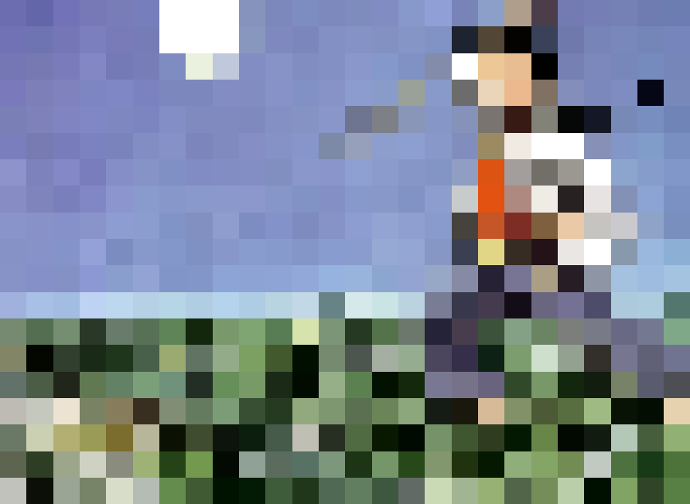
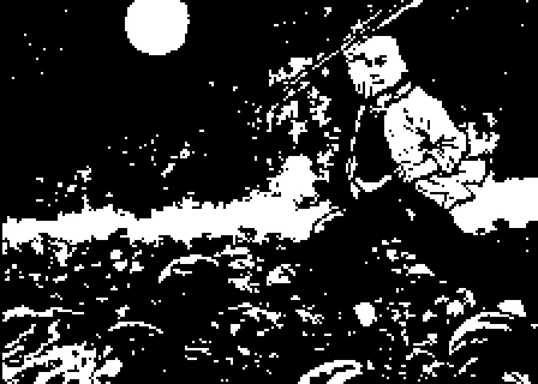
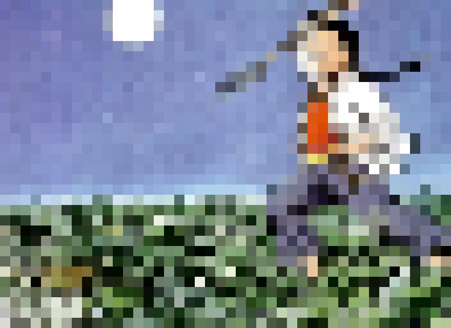
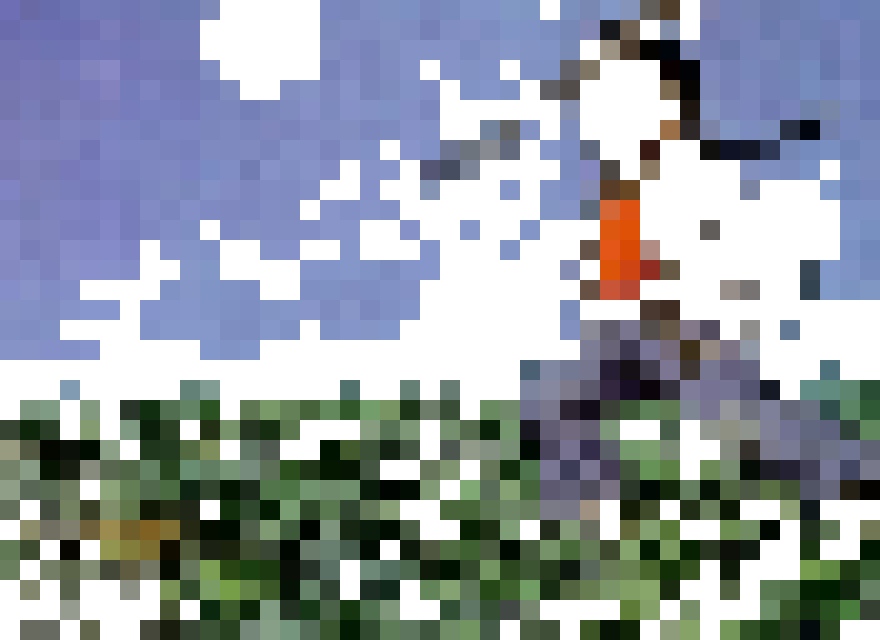
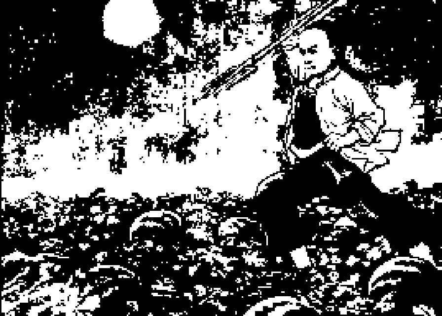
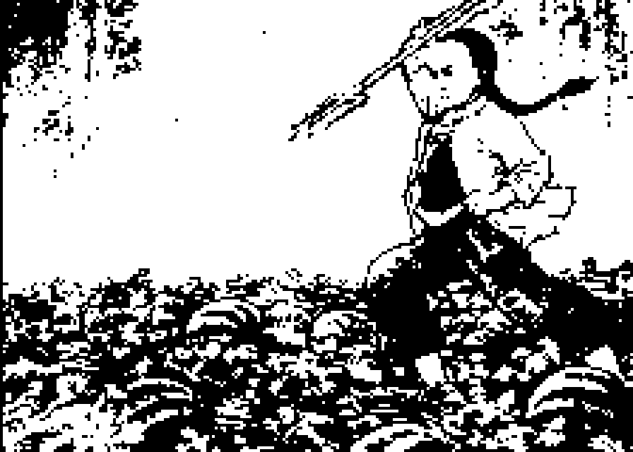
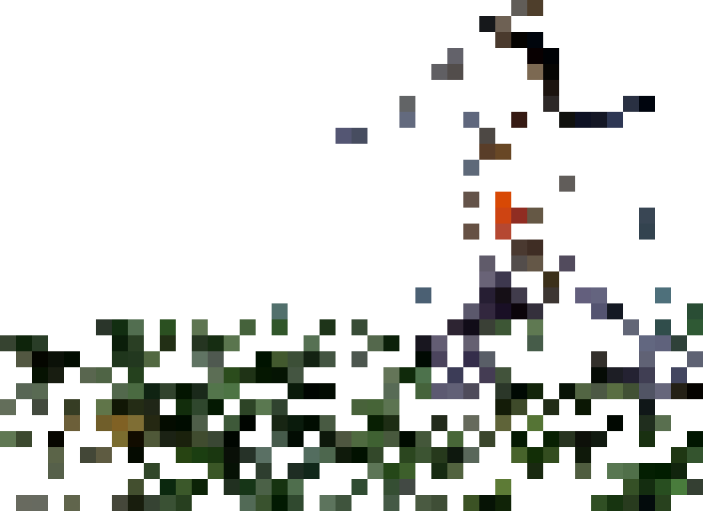
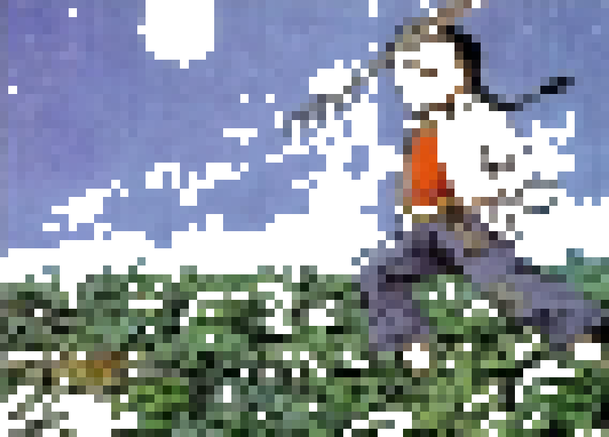

The Boy of Run Tu
少年闰土
Alias: Hometown
Author:Lu Xun
From: Yuwen Book for Grade 5, Renjiao Edition;
Hanging high up in the deep, blue sky was a golden full-moon, and down below at a sandy beach by
seaside
was
an
endless
stretch of dark-green watermelon growth.In the middle of all these was an eleven to twelve year
old
youngster
wearing a
silver ring at the neck and holding a steel pitchfork in his hand.He was stabbing hard at a
“cha”.The
“cha”
twisted its
body around and escaped from between his legs.
This youngster was Run Tu.When I knew him, he was only ten and some odd years old and that was
thirty
years
ago.At that
time my father was still alive, and our family was quite well off.I was a young master.That year
it was
our
family's
turn to host the annual rituals in paying homage to the clan's ancestors.I heard our turn only
came once
every
thirty
years and we were very serious about handling things right.n paying homage to likenesses of
ancestors in
the
first lunar
month, offering items were plentiful and utensils were exquisite.Many participants came to pay
their
respect
and
we had
to guard against pilferage of offering utensils.Our family only had one seasonal worker (There
were
three
types
of
workers in our area.Full-time workers worked for specific families all year round.Short-term
workers
worked
on a
daily
basis.Seasonal workers grew their own crops and worked for specific families during New Year,
festivals
and
rental
collection periods).The worker was overly busy and asked my father if he could ask his son Run
Tu to
watch
the
offering
utensils.
My father gave his permission.I was very happy because I had heard the name Run Tu for quite
some time
and
also
knew he
was about my age.He was born in a leap month.Of the five fundamental elements in Chinese
occultism he
was
deficient in
earth and therefore his father called him Run Tu, which literally meant “extra earth”.He knew
how to set
traps
in
catching birds.
So every day I was looking forward to New Year day.When New Year arrived, Run Tu would be here
as
well.The
end
of year
finally came, and one day my mother told me Run Tu was here.I ran over to look.He was in the
kitchen
with a
purplish
round-face, a small felt hat on his head, and a shiny silver-ring on his neck.His father loved
him
dearly
and
was afraid
he might die early.So he made a pledge in front of Buddha and gods that he would keep him under
control
with
a
ring.He
was generally shy with strangers but not with me.When there was nobody around, he talked to me
and we
got
acquainted
within half a day.
I didn't know what we talked about at that time.All I could remember was Run Tu was very happy
and said
that
after he
came to the city he saw many things which he had never seen before.
The next day I wanted him to catch birds. He said:
“It doesn't work with this weather.We need a heavy snowfall.
After snow has fallen, we would clear out a space on sandy ground.Then we would use a short
stick to
prop up
a
big
bamboo tray and scatter some blighted grain underneath.We would watch and when birds come to
feed, we
would
pull
the
string tied to the stick from distance and birds would be trapped in the bamboo tray.There are
all kinds
of
birds, such
as pheasant, hazel grouse, wood pigeon and blue-rump Pitta….”
So I wished for snowfall.
Run Tu also said to me:
“It's too cold now. In summer you come to our place and we will collect seashells at seaside
during the
day.Some
of them
are red and green in color.There are also small seashells nicknamed “ghost-busters” and
“bodhisattva
hands”.At
night,
Dad and I would go to guard watermelons, and you can come along.”
“Are you guarding against thieves?”
“No. Around our place when passers-by get thirsty and pick one watermelon to eat, we do not
consider
that to
be
stealing.We are guarding against badgers, porcupines and “chas”.Under the moon when you hear
rustling
sounds
then you
know “chas” are feeding on watermelons.You grab a pitchfork and tiptoe over …”
At that time I didn't know what the so-called “cha” really was.Even now I still haven't found
out.Only
somehow I
imagine
it was the size of a small dog and very ferocious.
“Would it bite people?” I asked.
“You have the pitchfork.When you get there and see the “cha” then you jab at it.This animal is
very
smart.Its
would run
towards your direction and flee between your legs.Its fur is as slippery as oil.”
All along I was unaware of all those interesting new things in this world, such as multi-colored
seashells
at
seaside
and risky adventures associated with watermelons.Before I only knew watermelons were sold in
fruit-stores.
“When spring tide arrives, many mudskippers just jump around in sandy ground and they have two
frog-like
legs…”
Oh, in Run Tu's mind there were countless atypical things unknown to my regular friends.They
wouldn't
know
certain
matters because when Run Tu was at seaside, they had limited visions just like me in looking up
to the
sky
within four
corners of courtyards.
But regrettably once the first lunar month passed, Run Tu had to go home.I was so rattled I
cried my
eyes
out.He
cried
too and refused to leave by hiding in the kitchen.But eventually his father dragged him
away.Afterwards
he
asked
his
father to bring to me a package of seashells and cute-looking bird feathers.I also sent him
gifts once
or
twice
but we
never met again.
- 

- 

- 
- 
- 
- 
- 
- 